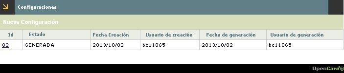
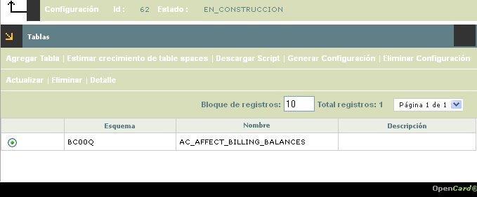
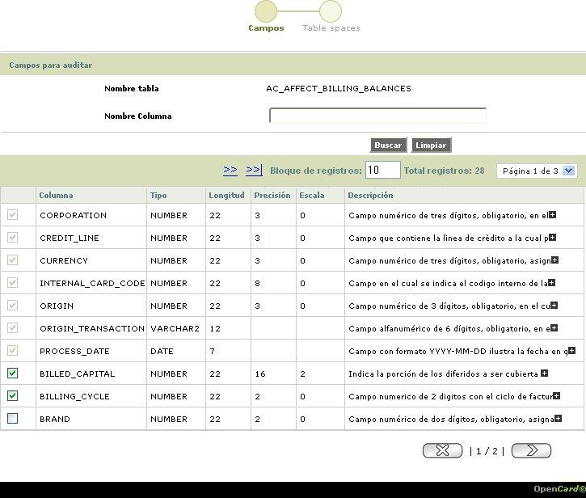
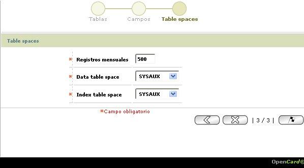
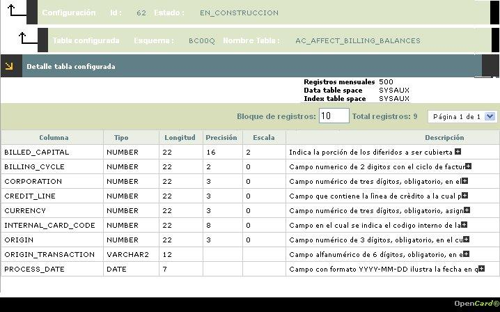
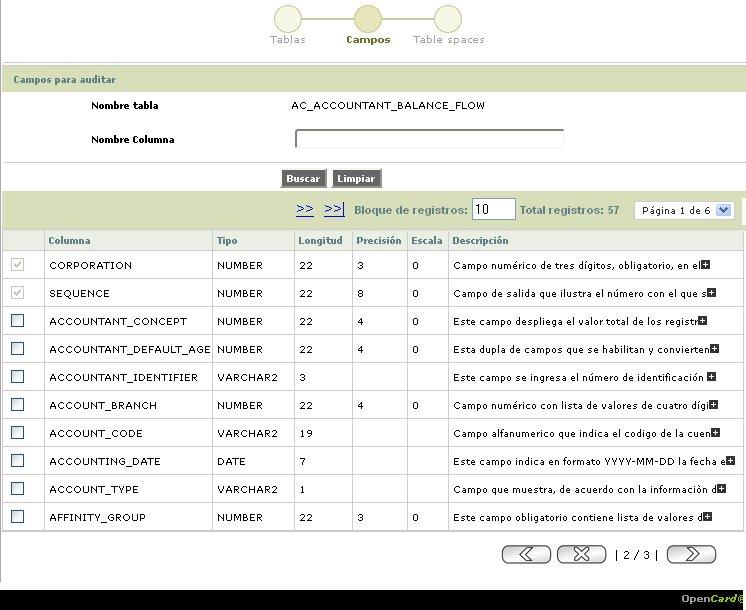
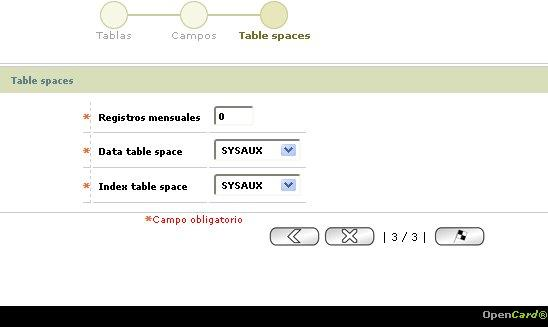
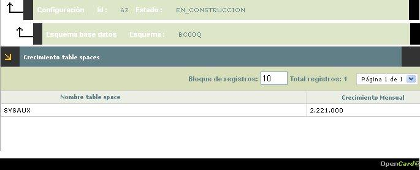
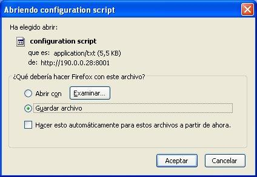
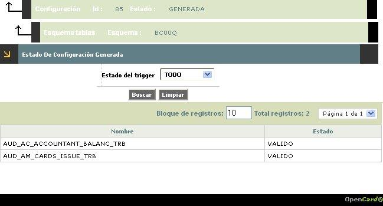

Configuraciones
A través de éste formulario Bankbú® permite a funcionarios conocedores del modelo de la base de datos, definir el alcance de la auditoría que la entidad requiera, teniendo en consideración el costo de la misma en cuanto al consumo de recursos del sistema que de ésta se derive.
Una configuración puede estar compuesta de una o más tablas o estructuras de la base de datos. El sistema no permite operar más de una configuración al mismo tiempo, motivo por el cual al generar una configuración, ésta entra en operación y desactiva la anterior:
El formulario inicial desplegado contiene el enlace Nueva Configuración.

Descripción de campos
Id |
Campo de salida que ilustra la secuencia asignada por el sistema y que permite identificar las diferentes configuraciones de auditoría definidos por la entidad. El formulario máximo muestra dos registros, el primero con la configuración vigente o generada y la nueva que esté en construcción. |
Estado |
Campo de salida que puede mostrar GENERADA o EN_CONSTRUCCION , permitiéndole al usuario diferenciar la configuración vigente de la que no lo esté. |
| Fecha creación | Campo de salida que muestra la fecha en la que cada configuración fue definida. |
| Usuario de creación | Campo de salida que ilustra el usuario de la base de datos del funcionario que definió cada configuración. |
| Fecha de generación | Campo de salida que muestra la fecha en la que cada configuración cambio de estado de EN_CONSTRUCCION a GENERADA . |
| Usuario de generación | Campo de salida que ilustra el usuario de la base de datos del funcionario que realiza el cambio de estado de EN_CONSTRUCCION a GENERADA . |
Nueva Configuración: El formulario desplegado al invocar el enlace provisto por el sistema en el campo Id del formulario inicial, contiene cinco enlaces que permiten invocar otros formulario desde los cuales se parametrizan y activan las configuraciones, éstos son: Agregar tabla, Estimar crecimiento de table spaces, Descargar Script, Generar Configuración, Verificar estado configuración y Eliminar Configuración; para éste último enlace no se requiere documentación adicional, dado que la única función es la de quitar la configuración desde la que se activa.
El formulario de Tablas contiene los enlaces Actualizar , Eliminar y Detalle.

Descripción de campos
Esquema |
Campo de salida que contiene el nombre asignado por el sistema al conjunto de tablas de la base de datos sobre las que se va a realizar la auditoría. |
Nombre |
Campo de salida que muestra cada uno de los nombres de las estructuras o tablas que van a ser auditadas. |
| Descripción | Campo de salida que ilustra brevemente la función principal de la estructura o tabla de la base de datos. |
Actualizar: Esta funcionalidad se activa siempre y cuando el esquema tenga estructuras o tablas asociadas, si el usuario invoca el enlace Actualizar, se depliega un wisard de dos pasos, mediante el cual puede modificarse los campos a auditar de la estructura desde la que se invoca, así como los datos del table space de la configuración generada.


Descripción de campos
Columna |
El formulario debe contener la totalidad de los campos o columnas de la estructura o tabla de base de datos indicada en el campo Nombre tabla, justo antes de cada nombre de la columna el formulario provee un campo checkbox, aquellos que aparecen preseleccionados y que no permiten modificación, corresponden a los campos que son llave primaria y por defecto deben auditarse, mientras que los restantes, aparecen disponibles para que, a criterio de quien define la auditoría, marque los demás campos o columnas que van a auditarse. La funcionalidad permite desmarcar campos previamente activados. |
Tipo |
Campo de salida que ilustra si el dato contenido corresponde a un valor numérico o alfanumérico o, a una fecha. |
| Longitud | Campo de salida que muestra la extensión o magnitud máxima que puede tener el dato dentro de cada campo. |
| Precisión | Aplica únicamente para los campos tipo numérico e indica la cantidad máxima de digitos que componen el dato, incluye tanto la parte entera como los decimales. |
| Escala | Aplica únicamente para los campos tipo numérico e indica la cantidad máxima de decimales que puede contener el dato. |
| Descripción | Campo de salida que muestra el comentario asociado a cada columna en la base de datos, que procura comunicar la razón del ser del campo. Si la longitud del mensaje supera la capacidad del campo en el formulario, se muestra un sígno más que al activarse despliega una ventana con el texto completo del mismo. |
| Registros mensuales | Campo numérico, obligatorio, en el que debe indicarse, en un máximo de diez (10) enteros, la cantidad tope de registros a auditar durante cada mes en que la configuración esté activa. |
| Data table space | Campo que posee lista de valores tipo combo de la que debe seleccionarse el nombre que identifica el espacio del disco en el que se almacenan los datos asociados a la auditoría. |
| Index table space | Campo que posee lista de valores tipo combo de la que debe seleccionarse el nombre que identifica el espacio del disco en el que se almacenan los índices asociados a la auditoría. |
Detalle: Si el usuario invoca el enlace Detalle, el siguiente formulario:

Agregar tabla: El sistema muestra la primera estructura o tabla de la base de datos, según el orden alfabético ascendente de las mismas. Bankbú® provee un wisard de tres pasos, en el primero, el usuario debe proceder a seleccionar, una a una, las estructuras que requiera incluir dentro del presente esquema, el formulario provee el filtro Nombre tabla, en el que, utilizando el símbolo "%" a manera de comodín, es posible consultar la base de datos para ubicar la estructura requerida. En el segundo paso, debe indicar, a cuáles campos de la estructura seleccionada, diferentes a llaves primaria, requiere auditar; así mismo, en éste formulario el sistema provee el filtro Nombre columna, que opera igual que el anteriormente descrito, pero a nivel de los campos de la estructura o tabla y, en el tercer y último paso, la data asociada al table space correspondiente.



Descripción de campos
| Esquema | Campo de salida que ilustra el nombre asignado por el sistema. |
| Tabla | El formulario despliega, en órden alfabético ascendente, las estructuras o tablas del sistema, de la cuales, el usuario debe marcar, en el radiobutton a la izquierda del nombre de la estructura a adicionar y luego, mediante el botón avanzar, llegar al segundo paso del wisard. |
Columna |
El formulario debe contener la totalidad de los campos o columnas de la estructura o tabla de base de datos indicada en el campo Nombre tabla, justo antes de cada nombre de la columna el formulario provee un campo checkbox, aquellos que aparecen preseleccionados y que no permiten modificación, corresponden a los campos que son llave primaria y por defecto deben auditarse, mientras que los restantes, aparecen disponibles para que, a criterio de quien define la auditoría, marque los demás campos o columnas que van a auditarse. |
Tipo |
Campo de salida que ilustra si el dato contenido corresponde a un valor numérico o alfanumérico o, a una fecha. |
| Longitud | Campo de salida que muestra la extensión o magnitud máxima que puede tener el dato dnetro de cada campo. |
| Precisión | Aplica únicamente para los campos tipo numérico e indica la cantidad máxima de digitos que componen el dato, incluye tanto la parte entera como los decimales. |
| Escala | Aplica únicamente para los campos tipo numérico e indica la cantidad máxima de decimales que puede contener el dato. |
| Descripción | Campo de salida que muestra el comentario asociado a cada columna en la base de datos, que procura comunicar la razón del ser del campo. Si la longitud del mensaje supera la capacidad del campo en el formulario, se muestra un sígno más que al activarse despliega una ventana con el texto completo del mismo. |
| Registros mensuales | Campo numérico, obligatorio, en el que debe indicarse, en un máximo de diez (10) enteros, la cantidad tope de registros a auditar durante cada mes en que la configuración esté activa. |
| Data table space | Campo que posee lista de valores tipo combo de la que debe seleccionarse el nombre que identifica el espacio del disco en el que se almacenan los datos asociados a la auditoría. |
| Index table space | Campo que posee lista de valores tipo combo de la que debe seleccionarse el nombre que identifica el espacio del disco en el que se almacenan los índices asociados a la auditoría. |
Estimar crecimiento de table spaces: El sistema, basado en un cálculo estadístico, indica la cantidad de espacio físico que requiere en el disco duro para almacenar la data de auditoría, en el evento en que, en un mes se alcance la cantidad de registros señalados en el campo Registros mensuales en el paso tres (Table spaces) de Agregar tabla.

Descripción de campos
Nombre table space |
Campo de salida que ilustra la asignación indicada por el usuario en el campo |
Crecimiento mensual |
Campo de salida que muestra el resultado del cálculo o estimación efectuada por el sistema, sobre la magnitud de espacio físico de disco duro requerida para almacenar la data de la estructura, desde donde se ordena ésta acción. |
Descargar Script: Al momento de activar éste enlace el sistema despliega una ventana emergente, mediante la cual se le permite al usuario ubicar y .... el archivo mediante el cual ....

Descripción de campos
Aplica el tener que describir éste formulario? |
Generar Configuración: Al activar éste enlace, el sistema esencialmente procede a desactivar el esquema vigente hasta ese momento y cambiar el estado del nuevo esquema de EN_CONSTRUCCION a GENERADA .
Verificar estado configuración: Una vez se genera la configuración del esquema y se realizan consultas, se activar éste enlace y al invocarlo, el sistema despliega el formulario:

Descripción de campos
Estado del trigger |
Campo que posee lista de valores tipo combo, mediante la cual es posible filtrar, por estado del trigger, el cual puede ser: Todo, Valido, Invalido o Eliminado. |
Nombre |
Campo de salida que ilustra el nombre asigando por el sistema al trigger creado por éste para cada estructura, usualmente le adiciona el prefijo AUD _ y, al final le agrega la terminación _TRB . |
| Estado | Campo de salida que muestra la condición de cada uno de los trigger definidos. |